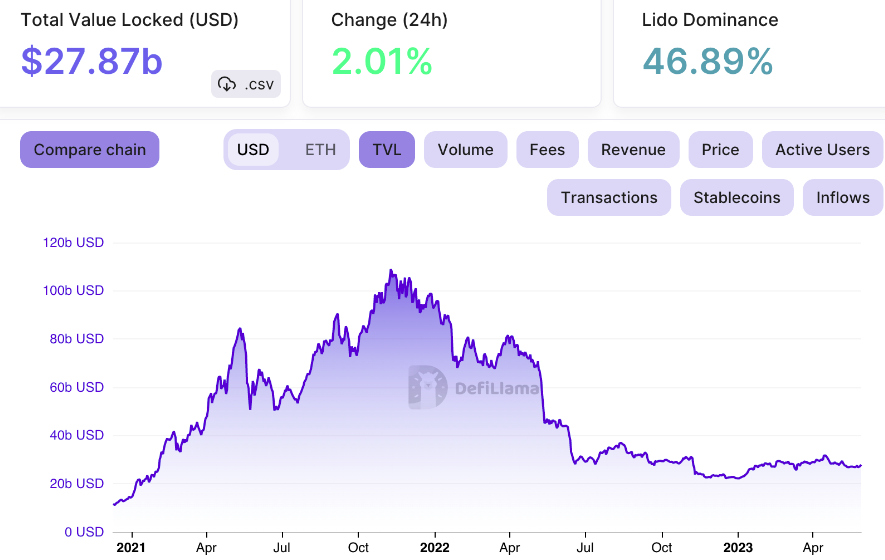

About Marinade Finance
Marinade Money is a financial technology (FinTech) company that has been disrupting the financial industry with its innovative and dynamic approach. Marinade Money provides various services designed to streamline and enhance financial management to engage individuals and organizations with savvy financial arrangements.
One of Marinade Money's main contributions is its cutting-edge portfolio executive stage, which helps clients simplify their investments through advanced calculations and information analysis. Whether you're a painstakingly pre-arranged monetary benefactor or starting your financial journey, Marinade Cash gives modified pieces of information and ideas to help you make informed decisions.
In addition, Marinade Cash is centered around money-related guidance and straightforwardness, ensuring that clients approach the data and gadgets expected to achieve their financial goals. They are a leader in the ever-expanding field of financial services thanks to their dedication to customer-driven arrangements and mechanical advancement. Marinade Cash is a name search for those searching for keen, notable money-related game plans.
Uses of Marinade Finance:
Computerized cash, such as Bitcoin, Ethereum, and various others, has an enormous number of purposes and applications. The most typical uses of Marinade Finance are as follows:
Automated Cash: Marinade Money can be used as an electronic choice rather than traditional financial principles for standard trades. It thinks about speedy and negligible cost cross-line portions.
Venture: Numerous people buy computerized monetary forms as a hypothesis, believing that their value will increase over an extended time. This is similar to investing in stocks or other resources.
Settlements: Digital currency can be used to send money across borders quickly and at lower costs than traditional settlement services. This is particularly significant for people in countries with confined permission to banking organizations.
Buying online: Digital currencies are accepted as a method of payment for labor and goods by some online retailers and specialist cooperatives.
Smart contracts: Ethereum and other platforms make it possible to create brilliant agreements, which are self-executing contracts in which the specifics of the agreement are directly encoded into code. They can automate processes and eliminate the need for middlemen in a variety of businesses, including the legal and financial sectors.
Money Decentralized (DeFi): Advanced monetary standards are at the focal point of the DeFi improvement, which hopes to repeat standard financial organizations like crediting, getting, and trading on blockchain stages without customary agents like banks.The use of tokens for resources: On blockchain stages, resources like land, labor, and even company stocks can be tokenized. This thinks about incomplete ownership and a clearer trade of ownership.
Security: Some digital currencies, like Monero and Zachs, emphasize anonymity and security, making them appealing to customers who want to keep their financial transactions private.
Gathering promises: Security Token Contributions (STOs) and Beginning Coin Contributions (ICOs) have been utilized as fundraising tools for new businesses and endeavors. Nevertheless, these strategies come with administrative challenges and risks.
Gaming: Advanced monetary standards are used in gaming natural frameworks for buying in-game assets, trading virtual things, and engaging dispersed trades inside virtual universes.
Supporting: Computerized monetary standards can be used as a wall against development and monetary unsteadiness in specific countries. A couple of monetary sponsors go to cryptographic types of cash during times of money-related weakness.
Preparing and Investigation: Additionally, digital currencies have been used in educational and research settings to investigate blockchain technology and its potential applications.
It is essential to keep in mind that the digital money industry is developing rapidly and that new applications continue to emerge. Anyway, the usage of computerized monetary forms comes with explicit risks, including cost flightiness, managerial weaknesses, and security concerns, so individuals should rehearse care and lead cautious assessment preceding connecting.
Activity of Marinade Money
A fictitious financial institution known as Marinade Finance was created for this explanation. In this hypothetical scenario, we will investigate Marinade Money's activities and components, including how it operates and the services it provides to its customers.
Cash for Marinade: Making Money Success Marinade Money is a dynamic and innovative financial institution that offers a variety of financial services to individuals, organizations, and associations. With a mission to help clients with achieving their financial targets and investigate the complexities of the state-of-the-art financial scene, Marinade Cash offers a thorough set-up of organizations expected to meet the various necessities of its clients.
1. Administrations for Speculations Marinade Money's center business is giving venture benefits that are custom-fitted to every client's particular goal and chance resilience. Marinade's team of knowledgeable financial advisors works closely with clients to develop individual investment strategies, whether they are saving for retirement, planning for education, or building wealth. Marinade Finance provides a variety of investment options, some of which include stocks, bonds, mutual funds, and other alternative investments.
2. Overflow The leaders of Marinade Cash fathom that regulating overflow goes past making hypotheses. It includes minimizing risks while simultaneously protecting and growing wealth over time. The institution offers comprehensive wealth management services that include estate planning, tax optimization, and risk management strategies. The professionals at Marinade put in a lot of effort to ensure that the wealth of their clients is well-managed and in line with their long-term objectives.
3. Solutions for Banking Marinade Finance provides a comprehensive selection of banking options, including checking and savings accounts, loans, certificates of deposit, and more. Whether a customer wants a straightforward checking account or a line of credit for their business, Marinade Finance offers flexible banking options that are tailored to their specific financial needs. For account the board accommodation, the organization additionally gives web-based banking and versatile application administrations.
4. Financial Planning Marinade Finance excels at assisting clients in the creation of comprehensive financial plans, as planning for the future is essential. The motivation behind these plans is to give a way to accomplish both present-moment and long-haul monetary objectives. The institution's financial advisors work closely with clients to develop plans that address a variety of topics, including debt management, saving goals, retirement planning, and more.
5. Risk The Board’s Understanding and directing financial risks is a pivotal piece of Marinade Cash's undertakings. The company offers insurance products that assist customers in safeguarding their assets and loved ones. Whether they require life insurance, health insurance, or property insurance, Marinade Finance assists clients in selecting the most effective coverage options to lessen potential risks.
6. Monetary Instruction Marinade Money is focused on teaching its clients to their maximum capacity. Workshops, studios, and online classes on a variety of financial topics, such as retirement planning, effective money management, and planning, are offered by the foundation. By giving informational resources, Marinade Cash hopes to work on financial instruction and help clients with seeking after informed money-related decisions.
7. Community Engagement In addition to providing its core services, Marinade Finance is committed to giving back to the community. Workers are urged to chip in their time and abilities for an assortment of local area projects, as well as to help magnanimous undertakings and support neighborhood occasions. Marinade Cash confides in being a careful corporate occupant and having a useful result on the organizations it serves.
All in all, Marinade Money is an adaptable monetary establishment that puts a high worth on its clients' monetary security. Marinade Money helps individuals and organizations navigate the complex world of money while attempting to achieve their monetary goals by providing a variety of services and a guarantee to customized financial arrangements. Marinade Money continues to serve as a guide for monetary strengthening in the cutting-edge monetary scene because of its emphasis on development, education, and community involvement.
Marinade Money creation
Title: Cash for Marinade: In the world of finance, where innovation and creativity frequently play a crucial role in achieving success, Marinade Finance stands out as a singular creation that has been simmering and evolving over time. Introduction: The process of marinating, in which a variety of ingredients combine to enhance flavor and produce a dish that is delicious and satisfying, is analogous to this financial concept. A Recipe for Financial Success Marinade Finance is a method for achieving financial success that incorporates a wide range of financial strategies, tools, and technologies.
The Building Blocks of Marinade Money's Personalized Venture Vehicles: The foundation of Marinade Cash consolidates regular hypothesis vehicles like stocks, protections, and land. These trustworthy trimmings go about as the base, like a marinade's fundamental liquid part. They provide financial backers with strength and an anticipated profit from speculation, providing a secure starting point.
Choices for Effective Financial Planning: Essentially, as a cook would add unprecedented flavors to further develop the flavor profile of a dish, Marinade Cash incorporates elective hypotheses like secret worth, speculation, and common assets. These investments bring risk and diversity that may lead to higher returns; However, a deeper understanding and expertise are required for effective management.
Blockchain and cryptocurrency: The emergence of cryptocurrency and blockchain technology is comparable to the addition of a novel and exciting ingredient to a dish. Marinade Finance is aware of the potential for these technologies to enhance financial transactions, reduce friction, and expand investment options.
Computerized reasoning and information analysis: With the precision of a chef's knife, data analytics and artificial intelligence (AI) play a crucial role in Marinade Finance. These developments enable monetary supporters to inspect huge proportions of data, recognize designs, and go with informed decisions. Reenacted knowledge-driven computations can in like manner modernize trading techniques, making it possible to answer rapidly publicize changes.
Risk-Response Management Techniques: Marinade Money, on the other hand, consolidates various gamble-the-board procedures in the same way that a skilled cook adjusts flavors to create a satisfying dish. Investors can reap the benefits of financial margination without taking on too much risk by using risk-adjusted return calculations, diversification, and hedging. The Marinade Cycle The process of making marinade money is similar to marinating meat before grilling it:
Selection: The first step is to select the ingredients with care. Investors must choose the right combination of technology, risk management strategies, and traditional and alternative investments based on their financial goals, risk tolerance, and time horizon.
Preparation: The ingredients need to be prepared after they have been chosen. This incorporates cautious investigation, a normal amount of exertion, and the development of a completely inspected hypothesis strategy. Marinade Money requires a fair way to deal with resource distribution and expansion, very much like a marinade requires the proper mix of flavors.
Margination: Time and diligence are expected for the margination cycle. In finance, this connects with the excessively long nature of hypotheses. Monetary patrons ought to let their portfolio "marinate" long term, allowing the picked assets for endlessly created.
Monitoring: It is essential to screen progress frequently while marinating. As a chef watches the marinated meat, investors ought to examine their portfolio and make any necessary adjustments. Rebalancing the distribution of assets or adopting new technologies and strategies could be examples of this.
Serving: Finally now is the ideal time to serve the dish because the marinade has accomplished something amazing. This is the same, in finance, to utilizing the additions from ventures, whether they come as profits, capital appreciation, or interest pay. Marinade Money's definitive goal is to fabricate a monetary portfolio with a wonderful and long-haul profit from speculation.
Benefits of Marinade Finance's Consistent Returns: Combining traditional and alternative investments, Marinade Finance offers the potential for higher returns than a standard investment portfolio. For those who are willing to embrace these resources, blockchain technology and digital currencies can also support returns.
Risk mitigation: Marinade Money reduces the likelihood of catastrophic mishaps by focusing on executives' risk. Utilizing artificial intelligence-driven risk examination and resource class and locale enhancement helps financial backers in exploring the occasionally unstable monetary business sectors.
Adaptability: Marinade Cash sees the meaning of staying current with inventive movements and market designs. Financial backers can change their procedures to make the most of new open doors and keep away from potential traps thanks to this flexibility.
Long haul Extension: Marinade Money emphasizes the long-term development potential of businesses, analogous to a dish that has been heavily marinated and improved over time. This strategy discourages impulsive trading and encourages investors to remain focused on their financial goals.
Accessibility: With the increase of electronic stages and adventure applications, Marinade Cash has become more open to a greater extent of monetary supporters. Typically, it is not reserved for the top; Anyone who has a web connection can participate.
Difficulties and Dangers Despite Marinade Money's numerous benefits, it is essential to recognize the following difficulties and dangers:
Complexity: Marinade Money's various fixings and systems can be confusing and necessitate a thorough understanding of financial business sectors, innovation, and risk executives.
Volatility: Portfolio value can be significantly affected by cryptocurrencies' and alternative investments' extreme volatility. This instability should be expected by financial backers.
Liquidity Issues: Alternative investments like private equity and venture capital can be difficult to liquidate, making it difficult to get money when you need it.
Regulation adjustments: The managerial environment for blockchain and advanced monetary standards is at this point creating. Financial backers need to be kept up to date on any changes that could affect their projects.
Overconfidence: Financial backers might face more gambling challenges they can deal with due to the potential for better yields in Marinade Money.By combining cutting-edge innovation and risk management systems with conventional and elective ventures, End Marinade Money is a novel approach to managing financial progress. Similar to a well-prepared meal, it provides a variety of flavors and ingredients that, when carefully selected and managed, can result in a financially rewarding experience.
Nonetheless, it is essential to approach Marinade Finance with a clear understanding of its complexities and risks. Financial backers should accomplish monetary objectives by adjusting their portfolio's different parts, similarly as a gourmet expert should accomplish an agreeable dish by adjusting the marinade's parts. With patience, adaptability, and a commitment to long-term growth, Marinade Finance can be a recipe for financial success in the ever-changing finance industry.
Marinade Finance creation
Title: Marinade Money: Marinade Finance stands out as a singular creation that has been simmering and evolving over time in the world of finance, where innovation and creativity frequently play a crucial role in achieving success. Introduction: A Recipe for Financial Success This financial idea is similar to the process of marinating, in which a variety of ingredients combine to enhance flavor and produce a dish that is delicious and satisfying. Marinade Finance is a financial success formula that brings together a variety of financial instruments, strategies, and technologies.
The Elements of Marinade Money Customary Venture Vehicles:
The groundwork of Marinade Money incorporates conventional speculation vehicles like stocks, securities, and land. These dependable fixings act as the base, similar to a marinade's essential fluid part. They give strength and an anticipated profit from speculation, offering a protected beginning stage for financial backers.
Options for Investing
Similarly, as a cook would add extraordinary flavors to improve the flavor profile of a dish, Marinade Money integrates elective speculations like confidential value, investment, and mutual funds. These investments introduce a level of diversity and risk that may result in higher returns; however, effective management of them necessitates a deeper comprehension and expertise.

Cryptocurrency and the Blockchain
The emergence of cryptocurrency and blockchain technology is analogous to the addition of an exciting new ingredient to a recipe. Marinade Finance is aware of these technologies' potential to improve financial transAuctions, lessen friction, and broaden investment options.
Information Examination and Computerized reasoning
In Marinade Finance, data analytics and artificial intelligence (AI) play a crucial role with the precision of a chef's knife. These innovations empower financial backers to examine immense measures of information, distinguish patterns, and go with informed choices. Simulated intelligence driven calculations can likewise computerize exchanging methodologies, making it conceivable to respond to quickly advertise changes.
Strategies for Managing Risk
Similarly, as a gifted cook adjusts flavors to make an agreeable dish, Marinade Money consolidates different gamble the board procedures. Using risk-adjusted return calculations, diversification, and hedging, investors can reap the benefits of financial marination without taking on too much risk.The Marinade CycleSimilar as marinating meat prior to barbecuing, Marinade Money includes a cautious and calculated process:
Selection: The careful selection of the ingredients is the first step. Based on their financial objectives, risk tolerance, and time horizon, investors must select the appropriate combination of technology, risk management strategies, and traditional and alternative investments.
Preparation: After selecting the ingredients, they must be prepared. This includes careful exploration, an expected level of effort, and the production of a thoroughly examined speculation methodology. Marinade Finance necessitates a balanced approach to asset allocation and diversification, just like a marinade necessitates the appropriate blend of spices.
Marination: Time and perseverance are required for the marination process. In finance, this relates to the drawn-out nature of speculations. Financial backers should let their portfolio "marinate" over the long haul, permitting the picked resources for develop and develop.
Monitoring: While marinating, it's crucial for screen progress routinely. Investors ought to examine their portfolio and make any necessary adjustments, just as a chef monitors the meat that is marinating. This could mean rebalancing the allocation of assets or adopting emerging technologies and strategies.
Serving: At last, after the marinade has done something amazing, now is the ideal time to serve the dish. This is equivalent, in finance, to making use of the gains from investments, whether they come in the form of dividends, capital appreciation, or interest income. Marinade Finance's ultimate objective is to build a financial portfolio with a satisfying and long-term return on investment.
The Advantages of Marinade Finance's Steady Returns: Marinade Finance offers the potential for higher returns than a conventional investment portfolio by combining traditional and alternative investments. The consideration of blockchain innovation and digital currencies can additionally support returns for those ready to embrace these resources.
Risk reduction: Marinade Money focuses on risk the executives, diminishing the probability of devastating misfortunes. Using AI-driven risk analysis and asset class and region diversification assist investors in navigating the sometimes-volatile financial markets.
Adaptability: Marinade Money perceives the significance of remaining current with innovative progressions and market patterns. Investors can adjust their strategies to take advantage of new opportunities and avoid potential pitfalls thanks to this adaptability.
Long-Term Expansion: Like a very much marinated dish that gets better with time, Marinade Money stresses the drawn-out development capability of ventures. Investors are encouraged to maintain their focus on their financial objectives and discourage impulsive trading with this strategy.
Accessibility: With the multiplication of computerized stages and venture applications, Marinade Money has become more open to a more extensive scope of financial backers. It's not generally saved for the tip-top; anybody with a web association can partake.
Difficulties and Dangers
While Marinade Money offers many advantages, it's fundamental to recognize the difficulties and dangers related with this methodology:
Complexity: The different fixings and systems engaged with Marinade Money can be perplexing and require a profound comprehension of monetary business sectors, innovation, and hazard the executives.
Volatility: The highly volatile nature of cryptocurrencies and alternative investments can have a significant impact on portfolio value. This volatility must be anticipated by investors.
Liquidity Issues: Private equity and venture capital, two examples of alternative investments, can be hard to liquidate, making it hard to get money when you need it.
Changes to regulations: The administrative climate for blockchain and digital currencies is as yet developing. Financial backers need to remain informed about changes that could influence their ventures.
Overconfidence: Investors may take on more risk than they can handle because of the potential for higher returns in Marinade Finance. End Marinade Money is an inventive and imaginative way to deal with making monetary progress by joining conventional and elective ventures with state-of-the-art innovation and chance administration systems. It offers a variety of flavors and ingredients, much like a well-prepared meal, that, when carefully chosen and managed, can lead to a financially rewarding experience. Nonetheless, it is essential to approach Marinade Finance with a clear comprehension of its risks and complexities. Investors must achieve financial goals by balancing their portfolio's various components, just as a chef must achieve a harmonious dish by balancing the marinade's components. Marinade Finance can be a recipe for financial success in the ever-changing world of finance with patience, adaptability, and a commitment to long-term growth.
LOGIN
Marinade Money Login Strategy
Marinade Money is focused on giving its clients a protected and consistent login experience. Our method of logging in uses cutting-edge technology and robust security measures to keep your financial information safe and make it easy to use our platform.
Username and Secret key:
Username: To begin, clients are expected to make a remarkable username during the enlistment interAuction. This username will act as their identifier on Marinade Money.
Password: To protect their accounts, we strongly encourage users to create complex, strong passwords. A minimum length, the use of uppercase and lowercase letters, numbers, and special characters, and other requirements are required of passwords. Frequently, users are prompted to change their passwords.
MFA: Multi-Factor Authentication The safety of your account is our top priority at Marinade Finance. To add an additional layer of assurance, we offer Multifaceted Validation (MFA). When empowered, MFA expects clients to enter a one-time confirmation code shipped off their enrolled email or cell phone subsequent to entering their username and secret phrase. This makes sure that even if someone gets access to your login information, they can't log in without the additional verification code.
Biometric Validation: On compatible devices, Marinade Finance supports biometric authentication methods like fingerprint and facial recognition for added convenience and security. To maintain a high level of security while also streamlining the login procedure, users can choose to enable these features.
Detection of Devices: Marinade Finance makes use of technology that recognizes devices in order to further enhance security. Our system will ask you to confirm your identity via email or text message when you log in from a new device or location. Unauthorized access from unfamiliar devices is prevented by this.
Time sensitive Access Control: We use time-based access control to prevent unauthorized access to your account. We may temporarily lock your account or prompt you to verify your identity through MFA if we discover unusual login patterns, such as multiple login attempts within a short period of time.
Account Recuperation: Marinade Finance offers a safe account recovery procedure in the event that you forget your password or encounter login difficulties. Clients can reset their passwords by following a progression of personality check steps, guaranteeing that main the record proprietor can recapture access.
Monitoring and audits of security: Real-time monitoring and regular security audits are used by Marinade Finance to identify and respond to any suspicious activity on the platform. Your financial information is in good hands with our dedicated security team.
Client Schooling
We accept that client schooling is a significant part of online security. Users can protect their accounts by using Marinade Finance's resources, tips, and best practices, such as how to create strong passwords, spot phishing attempts, and use MFA effectively.
In conclusion, Marinade Finance's login method places an emphasis on both user convenience and security. By joining solid confirmation measures with trend setting innovation, we plan to give a safe and easy to use monetary stage for our esteemed clients. Our responsibility is to ensure your financial well-being, and we are committed to upholding the highest levels of asset security.
STG
Conceptual Overview:
Marinade Finance establishes its overarching objectives and long-term goals at the strategic level. The organization's clear course of Auction is provided by these objectives, which typically span several years. The organization's essential system incorporates:
1. Mission and Vision: Through expert investment advice and cutting-edge financial solutions, Marinade Finance's mission is to empower individuals and organizations to achieve their financial objectives. The vision is to turn into a confided in accomplice in monetary achievement.
2. Market Situating: Marinade Finance has a well-thought-out position in the financial services sector. It identifies niches, target markets, and market segments in which it can provide superior value. The organization separates itself through a blend of mastery, innovation, and customized administration.
3. Cutthroat Investigation: Marinade Money conducts progressing examination of contenders, distinguishing qualities, shortcomings, potential open doors, and dangers. This assists in creating procedures with beating rivals.
4. Portfolio of Products and Services: The company specifies its range of financial services, which may include managed portfolios, mutual funds, retirement planning, and wealth management, among other options. These contributions line up with its essential objectives and take care of the particular requirements of its main interest group.
5. Risk The executives: A major focus of the strategy is risk management. Marinade Money lays out risk resilience levels and executes techniques to limit likely dangers to both the organization and its clients' speculations.
6. Growth Methods: Marinade Money distinguishes roads for development, for example, venturing into new business sectors, sending off inventive items, or framing key associations. Over time, these strategies aim to increase profitability and market share.
Practical Application
Marinade Finance moves on to tactical implementation after establishing the strategic framework. The focus of tactical decisions is on how to achieve the strategic goals, and they tend to be more short- to medium-term in nature. Some important parts are:
1. Resource Allotment Systems: Based on market conditions, economic indicators, and investment objectives, the company optimizes client portfolios using tactical asset allocation strategies. In order to maximize returns and control risk, this entails rebalancing portfolios on a regular basis.
2. Segmentation of Customers: Clients at Marinade Finance are divided into groups according to their risk tolerance, investment horizon, and financial objectives. This empowers the customization of speculation techniques to meet the novel requirements of each portion.
3. Branding and marketing: Strategic promoting endeavors expect to improve brand perceivability, draw in new clients, and hold existing ones. This may entail the creation of educational content, social media engagement, and targeted advertising campaigns.
4. Regulation and compliance: Remaining consistent with developing monetary guidelines is basic. Marinade Money constantly screens and adjusts its functional cycles to stay inside legitimate limits.
5. Innovation Framework: The company makes investments in cutting-edge technology to increase data security, increase operational efficiency, and provide customers with access to digital platforms that are simple to use for managing their investments.
6. Monitoring the Performance: Strategic execution checking includes consistently following and breaking down venture execution to guarantee it lines up with client goals and company benchmarks. Changes are made on a case-by-case basis
Execution of the Operation
Marinade Finance implements its strategic and tactical plans every day at the operational level. This is where the real Auction takes place, and operational excellence is absolutely necessary:
1. Controlling a Portfolio: Expert portfolio managers carry out investment strategies, make buy-and-hold decisions, and keep an eye on developments in the market in order to achieve the best returns while adhering to predetermined risk parameters.
2. Customer Service: To ensure customer satisfaction, the client service team responds to inquiries, assists with account management, and offers financial advice.
3. Information Examination: The data on market trends, asset performance, and economic indicators that are collected and analyzed on a regular basis by Marinade Finance's analysts This information illuminate’s speculation choices and system changes.
4. Risk Alleviation: Maintaining robust security measures to safeguard client data and assets is necessary for operational risk mitigation. Plans for disaster recovery and insurance coverage for unforeseen circumstances are also included.
5. Transparency and Reporting: Clients receive regular reports from the company detailing investment outcomes, fees, and portfolio performance. Transparency helps clients remain informed and builds trust.
6. Preparing and Improvement: Marinade Money puts resources into worker preparing and improvement to guarantee staff are outfitted with the vital abilities and information to successfully execute their jobs.
In conclusion, Marinade Finance's success is based on its capacity to integrate its tactical and operational execution with its strategic vision. The company is able to provide value to its clients, expand its business, and navigate the financial services industry's complexities by effectively defining its mission, comprehending its market, and implementing its strategies. Marinade Finance is able to thrive in an environment that is both competitive and dynamic thanks to this all-encompassing strategy that includes the STG framework.